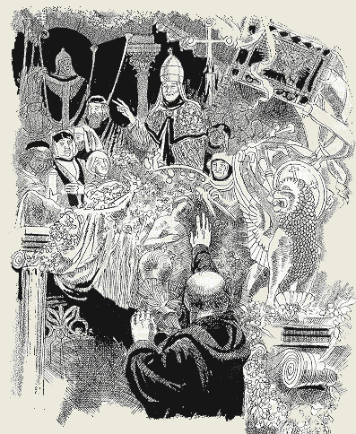

The Book of Revelation
A Brief Overview Christ appointed the aged apostle John, now an exile on the isle of Patmos, to write "Revelation" in order to give hope and assurance to the suffering, persecuted evangelical Christian church. The Roman armies of Titus had destroyed the temple at Jerusalem in AD 70 in fulfillment of Christ's Olivet prophecy recorded in Matthew 24 and now the church needed to be assured that Christ was Lord of all in the "heavenly temple" and in complete control of the flow of history unto the day of His promised second coming in the clouds of heaven with all His holy angels.
Employing the same basic apocalyptic symbolism as Daniel, John points the believing evangelical Christians of every generation to the ultimate victory of the Lamb of God over the powers of Satan. The prophecy of Daniel has portrayed the history of Israel from its captivity in Babylon unto the Messiah, the Lord Jesus Christ. Now John, using the same apocalyptic symbolism as Daniel, portrays the history of the Christian church, spiritual Israel, from Pentecost unto the glorious visible return of Christ in all His kingly glory to rescue His persecuted Bride, symbolically called the "144,000". So Daniel brings us to the time of Christ while John on the other hand brings us from the ascension of Christ to the end of the world and Christ's promised second coming. Christ's messianic redemptive ministry was for a literal 3 and 1/2 years or 1260 days. John uses this symbol to describe the church age as a symbolic era called the "1260 days" or "42 months" witnessing for the gospel of Christ in the "wilderness" of this fallen sinful world.
The evangelical church of Christ must witness and suffer throughout her earthly sojourn of "1260 (symbolic) days" at the hands of Satan's cruel and oppressive spiritual kingdom called "Babylon". John assures the suffering church that the persecuting demonic forces of Satan's kingdom will ultimately fail and will finally be destroyed by the "second death".
The great conflict between Christ and Satan is vividly portrayed in amazing apocalyptic "Day of Atonement", Yom Kippur symbolism. God's justification of repentant sinners by His unmerited grace alone through faith alone in the sinless life and atoning death of Christ alone as revealed in the Bible alone must be our constant mantra as we take the redemptive sin-atoning gospel of the Lord Jesus Christ to all the world.
Chapter 1-3 Revelation begins its account by giving counsel and warning to the "seven" Churches situated in present-day Asia Minor. Throughout the entire history of the church the conflicts, heresies, and problems that are described in these churches can be found in every generation. These churches do not represent successive historical periods in history but rather symbolically represent the complete church in every age with the errors and problems of every age.
In speaking words of comfort, encouragement and even rebuke to the "Seven Churches", our Lord addresses the entire evangelical Christian church of every age. Jesus' warnings against sin and heresy strengthen us and warn us even today as we "earnestly contend for the faith once delivered to the saints". The Ebionite Gnostic heresies and false gospels which were brought into the infant church of the first century and vigorously opposed by the apostles are still the heresies of today. But now with the passing of time they have been venerated and given "respectability" by the "Man of Sin", the Papacy, which has usurped and taken over the Christian church.
With the fall of Jerusalem in AD 70 the infant Christian church as the new Spiritual Israel needed assurance and encouragement to face the terrible trials and persecutions that lay ahead. By using metaphor and the covenantal symbolism of the Old Testament God portrays the prophetic future of the Church. The glorious triumph of the Lamb over the Dragon, Light over Darkness, and Spiritual Israel over Spiritual Babylon, the Pure Woman over the Impure Prostitute Woman are vividly portrayed using the allegorical symbols of the Heavenly Temple and the Creation Cosmology of the Old Testament.
The Symbols of the Heavenly Temple
Chapter 4: The Judgment Scene: John opens to the full view of the church the true meaning of history. Through nearly 6,000 years of blood stained history, men have asked why has all this suffering been permitted. With fists raised to the God of Heaven, men have blamed the God of infinite love for all the heart rending suffering of the human family. In the Judgment scene of Revelation 4 we see God's answer to the challenge of who is to blame for all the carnage of history. What is "revealed" in the Revelation is how the "mystery of iniquity" came to be; how it has manifested itself in history; how God has dealt with it in the gospel of Jesus Christ; and how it will ultimately be justly destroyed by the "second death".
The earthly Temple in Jerusalem had been swept away in AD 70 by the armies of Rome exactly as Christ had foretold and so this prophecy of the apostle John exiled on Patmos begins by giving the Church a view of the events which are transpiring in the true temple of God, the Heavenly Sanctuary. He is shown the scene of the Judgment, which commenced with Christ's ascension into heaven and His enthronement as our Priest-King at "the right hand of the majesty on high". All the fallen Sons of Adam—every nation, kindred, tongue, and people are to appear at the arraignment before the Divine bar of justice which takes place in the "heavenly sanctuary".
Thus we have the Judgment scene—the unsealing of the Everlasting Covenant of God. In the everlasting covenant is revealed how God has handled the sin problem. First in symbols and shadows in the books of Moses—the first or "Old" covenant—and then in the reality of God's full and final revelation—the "New" covenant in the Gospel of Jesus Christ our Lord.
He is shown the great throne of the Lord God Almighty who is the Ruler and Judge of heaven and earth. There are also the 24 Elders who are witnesses from the earth and we see the entire host of heavenly angels who continually worship God and praise Him who sits upon the throne. The 24 Elders are those who were resurrected during the great earthquake when our Lord cried out from the cross, "It is finished"!!!
Then the great Scroll of the Everlasting Covenant is brought forth. This Covenant pronounces blessings upon those who are righteous and curses upon the unrighteous. The Law of God, as found in the covenantal scroll, is to be the judgmental standard of righteousness. Our Lord fulfilled every requirement of the Law for us who so miserably fail to meet its holy standard of righteousness.
John beholds the glory and holiness of the scene and despairs that there is no hope for the fallen Adamic family, only condemnation and doom. No one is found worthy and righteous enough to fulfill the demands of the covenant and look upon it. But then in the midst of the throne steps forth the Lamb of God who is not only the Son of God but the Son of Man as well. Because He, the Divine Substitute and Sacrificial Lamb of God is there, the throne becomes, not only the seat of justice, but is in fact the "mercy seat" or "propitiatory" or "place of reconciliation". As the Divine Substitute, Jesus has allowed the curses of the Law—the punishment which all sinners deserve (see the blessings and curses of the covenant in Deuteronomy 11:26-29) to fall on Him so that the blessings of the forgiveness of sin and eternal life might accrue to those who repent and put their trust in the blood of Jesus for their acceptance with God.
 Spiritual Israel, the 144,000 Jesus Christ, the only Worthy One, reaches out to take the sealed covenantal scroll from the sacred hand of the Father. Then commences in heaven the judgment of the world as the gospel is proclaimed upon the earth to every nation, kindred, tongue, and people by His faithful sealed servants, the "144,000"—the symbolic number of spiritual Israel, the church.
Spiritual Israel, the 144,000 Jesus Christ, the only Worthy One, reaches out to take the sealed covenantal scroll from the sacred hand of the Father. Then commences in heaven the judgment of the world as the gospel is proclaimed upon the earth to every nation, kindred, tongue, and people by His faithful sealed servants, the "144,000"—the symbolic number of spiritual Israel, the church.
Thus as the everlasting Gospel of Jesus Christ is proclaimed on Earth, the judgment goes on in Heaven. All the world is being judged by the gospel of the Lord Jesus Christ!! Those who believe and repent have their names written and sealed into the covenantal Book of Life and become part of the redeemed community, symbolically called the "144,000". Those who are wicked and unbelieving receive the verdict of death and the "Mark of the Beast" and will ultimately be destroyed in the Lake of Fire prepared for the Beast, the False Prophet, and the Devil.
This Day of Atonement theme is the background of the entire setting of Revelation. This setting of the end-time judgment of the world has one more motif which must also be explained before attempting to understand the meaning of the symbols of Revelation.
The Symbols of the Hebrew Apocalyptic Cosmology (World View)
The covenantal world view of the Hebrews of the Old Testament was this:
The Hebrews understood that the temple of God in heaven was the center of the entire universe. The loyal covenantal people of God on the earth—the children of Israel—were encamped around the earthly sanctuary, each tribe under its own banner. The earthly tabernacle was a symbolic representation of the heavenly. There Christ's true holy throne is set down in heaven while the earth is called "His footstool".
1. The encampment on the East of the sanctuary was the encampment of Judah (the banner emblem of Judah was the Lion) and comprised the families of Judah, Issacar, and Zebulon.
2. The encampment on the South of the sanctuary was the encampment of Reuben (the banner emblem of Reuben was the Face of a Man) and comprised the families of Reuben, Simeon, and Gad.
3. The encampment on the West of the sanctuary was the encampment of Ephraim (the banner emblem of Ephraim was the Ox) and comprised the families of Ephraim, Manasseh, and Benjamin.
4. The encampment on the North of the sanctuary was the encampment of Dan (the banner emblem of Dan was the Eagle) and comprised the families of Dan, Asher, and Naphtali.
In the earthly sanctuary, the sacred ark of the covenant, and the place of Atonement were situated in the very center of the encampment of Israel. In the heavens above the Earth was the true throne of God. God's throne above in the heavens was portrayed in the Old Testament apocalyptic literature as a great heavenly chariot with wheels on all fours sides and guarded by the four cherubim angels attending the chariot of God (see: Ezekiel Chapters 1 and 10). The stars in the heavens were portrayed as representing the angelic host surrounding the throne as they continually sang praises to the One who sits upon the throne.
The throne of God in heaven is symbolically represented as resting upon a great transparent crystal-clear dome. The angels did the bidding of God and carried out God's divine will in the affairs of man upon the earth. They executed the judgments of the Great Judge in heaven. When a portent appeared in the heavens, events on Earth were sure to follow. Falling stars in apocalyptic symbolism were angels carrying out the commands of God. Comets were apocalyptic portents of divine intervention in the affairs of man.
The great heavenly sanctuary was the abode of the eternal Judge, the King of Israel, the Lord God Almighty. The Temple on Earth was understood to be a mere copy or shadow of the great throne room in Heaven from whence the Judge and Lawgiver of Israel ruled and administered justice for the children of Israel. The ark of the covenant and the Shekinah glory with the covering Cherubim in the earthly tabernacle were a pattern of the true throne of God in heaven. (Even the ancient pagan religions believed that their temples on earth were patterns of realities in the heavens.)
The people of Israel had covenantally vowed to live within the terms of the covenant. Those who disobeyed or ignored the terms of the covenant were declared "unrighteous" and were "cut off" from the covenant community and disinherited from the promises and blessings of the covenant. The curses of the covenant fell upon the unrepentant transgressor of the covenant.
The four living creatures which surrounded the throne symbolized the angelic host who administered justice within the encampment. They had the faces of a Lion, a Man, an Ox, and an Eagle to show that they protected and carried out judgment and justice within all four points of the compass within the encampment of Israel. (See: Ezekiel chapters 1 and 10)
God punished Israel when disobedient to the covenant with the "four terrible covenantal curses"—Sword, Famine, Pestilence, and Wild Beasts of the Earth.
For thus says the Lord GOD: "How much more it shall be when I send My four severe judgments on Jerusalem -- the sword and famine and wild beasts and pestilence -- to cut off man and beast from it? Ezekiel 14:21
Each of these four Cherubim "ruled" a fourth part of the earth and went to the four "corners" of the earth in judgment and justice. (see Ezekiel 1, Zechariah 6 and Revelation 6 and 7—the four angelic creatures who guarded the throne—each one successively with the face of a lion, an ox, a man, and an eagle. The "four horsemen" and the "four winds" also represent these four angelic creatures who do God's bidding.)
The symbolic rivers and fountains of waters nourished the Earth and gave life to the plants and animals and redeemed community living on the "circle" of the Earth.
In this symbolic paradigm the civilized covenantal "island" of the encampment of Israel was surrounded by the great chaotic rebellious "Sea", the dwelling place of the "lawless peoples" of the unbelieving Gentiles. Satan—the Lawless One, Azazel, the adversary of God—was the ruler of the unbelieving Gentiles from his great city, spiritual "Babylon".
This great city was the "seat of the Beast" and this city was nourished by the great "Euphrates River" which flowed into the city and gave life to the city. Satan was portrayed as the seven headed Serpent Dragon, the demonic Leviathan, who lived in the sea and ruled the chaotic lawless sea of peoples who were outside of the blessings of the divine covenant. God prohibited the "sea" of the Gentiles from overflowing into the land of Israel. He guarded the borders of the Promised Land and punished those nations who would invade the Holy Land of the Covenantal People.
Beneath "Babylon" was the allegorical demonic abode of the nether world, called the abyss, the bottomless pit, shades, or hades, the land of darkness and unclean spirits of wickedness and the land of scorpions, dragons, and locusts and all things unclean. These unclean spirits figuratively come forth from the underworld and stream out of "Babylon" and attack the Promised Land from the north. The armies of literal Babylon always attacked ancient Israel from the north, because the great desert which was situated between Israel and Babylon prohibited an attack directly from the east. Thus Babylon was always "The King of the North". Egypt however, the other enemy of Israel, was south of the Promised Land and always attacked from the south and was always "The King of the South".
To summarize, we find that the apocalyptic literature of the Bible depicts seven allegorical realms of the created order over which God ruled from the throne room of God sitting above the creation—
1.) The Earth upon which the sanctuary encampment of covenantal Israel was situated.
2.) The Chaotic Sea surrounding the Earth.
3.) The Rivers and Fountains of Waters flowing through and nourishing the Earth.
4.) The High Heaven or Upper Firmament which surrounded the Heavenly Sanctuary of Yahweh was the abode of the Sun, the Moon, and the Stars.
5.) The Bottomless Pit or the Abyss over which the Seat of the Beast, "Babylon", was situated.
6.) The "River Euphrates" which nourished and gave life to spiritual Babylon.
7.) The Lower Heavens or Lower Firmament called the Air or the Atmosphere.
Having described the background of the ancient cosmology which is employed by the Apostle John for the Book of Revelation, we can better understand the allegorical symbolism which he, under the inspiration of the Holy Spirit, uses to describe the great controversy between Christ and Satan.
The opening of the "seven seals" and the blowing of the "seven trumpets" are Day of Atonement symbols depicting God's judgments upon the unrepentant inhabitants of the world. These judgments are meant to bring the world to repentance and salvation through faith in the Everlasting Gospel which is proclaimed throughout the world by God's witnesses, the redeemed community called the "144,000", also called the "two witnesses" in Revelation 11. The church witnesses for Christ throughout its earthly ministry of symbolic "1,260 days" or "42 months".
The Seven-headed Beast The question of the identity of the Seven Heads of the Beast of Revelation 12, 13 and Revelation 17 is one the issues that has caused a lot of discussion and confusion among evangelical Christians today.
1.) The Seven-headed Beast with ten horns is the Roman Empire. Satan is the power behind this seven-headed dragon-beast which persecutes the church throughout her earthly sojourn of symbolic "1260 days". The fall of the pagan Roman Empire is symbolized in Revelation 13 as its having received a "deadly wound". The deadly wound is "healed" however and from the ashes of the Imperial Roman Empire arises Papal Rome which is an "image" or pseudo-Christian duplicate of the pagan Roman Empire. The "pontiffs" of Imperial Rome were replaced by the "pontiffs" of Papal Rome. Now Papal Rome sits upon the seven hills of Rome and pompously claims to rule the Christian church from its Vatican Papal throne as the so-called "Vicar of the Son of God". (VICARIVS FILII DEI = 666)
Thus Pagan Rome is actually the first beast with seven heads and ten horns of Revelation 13 and Papal Rome, the Papacy, is the second beast of Revelation 13, not the United States of America as some mistakenly teach. The pope is the "false prophet", 666, who sits on the throne of Rome after the fall (deadly wound) of pagan Rome. The "1260 days" of Revelation are a metaphor for the entire Christian era rather than a literal 1260 years from A.D. 536 to 1798 as some mistakenly teach. The symbolism here is a metaphor for the entire Christian era from the ascension of our Lord to the end of the world, not a period of literal 1260 years as interpreted by those who mistakenly use the so-called "day for a year" principle to interpret this symbolism.
Christ ministered for a literal 3 and 1/2 years from His baptism to his resurrection. But the Christian church metaphorically in Revelation "prophesies" and proclaims the gospel to all the world in sack cloth in the "wilderness" for a figurative "1260 days" or "42 months". This numerical symbolism comes from the fact that Elijah was in the wilderness for 3 and 1/2 years fleeing from the false prophetess Jezebel; and also from the fact that Christ in His ministry on earth proclaimed the Kingdom of God for 3 and 1/2 years. The literal 3 and 1/2 years of Elijah and Christ's ministry on earth are replayed or recast in John's " Revelation" as symbolic themes for the wilderness experience of the Christian community from Pentecost to the coming of the Lord as the church wages spiritual warfare against "Babylon", Satan's spiritual kingdom.
2.) The Lamb-like Beast of Revelation 13 is the "False Prophet", the apostate Roman papacy that heals the deadly wound that Pagan Rome receives in the collapse of the Empire. Thus Pagan Rome lives on as Papal Rome due to the ability of the "False Prophet", the lamb-like Beast, to breathe life back into Rome and causes all the world to worship the Roman Beast again, but now as Papal Rome. Make no mistake, the religion of Pagan Rome is the same religion as Papal Rome. The religion and gods of Pagan Rome came from the ancient Babylonian worship of Nimrod and Semaramis. The lamb-like Beast of the apostate Roman papacy has erected an exact duplicate or image to the first Beast of Rev 13:1. The Papal system of justification by infused righteousness rather than the imputed righteousness of Christ is a cleverly disguised system of justification by works. Every false religion of spiritual Babylon is a system of salvation by human works and merit rather than by faith alone in the sinless life and atoning death of Christ upon the cross of Calvary.
3.) Now to come to Rev 17 and the Seven-headed Beast with ten horns and the impure Woman who is sitting on the Beast. This woman is the "Woman with the Cup" as she was universally understood in John's day as being Venus the promiscuous goddess of "love" (fornication and prostitution through her temple prostitutes) and "wrath" who drank the blood of her enemies from her cup. The worship of this woman by Pagan Rome was taken into the apostasy of Papal Rome as the Virgin Mary cultus with her vestal virgins, the celibate nuns. Thus the papacy is here depicted as Babylon, the impure woman dressed in scarlet and purple with a cup of abominations.
"MYSTERY, BABYLON THE GREAT, THE MOTHER OF HARLOTS AND OF THE ABOMINATIONS OF THE EARTH. I saw the woman, drunk with the blood of the saints and with the blood of the martyrs of Jesus." Revelation 17:5-6
The Papacy through her Crusader wars and inquisition has spilled more blood that any other religious system in all the earth. Her perverted homosexual and adulterous "priests" and "popes" have filled the earth with her abominations and false doctrines. Every teaching and "Mystery" that Pagan Rome embraced re-appeared in Papal Rome but with "Christian" terminology. Thus the "Image to the Beast", Papal Rome, is actually a worship of the "Queen of Heaven"—Venus, Semaramis, Diana, or Isis and all the other gods of Rome in the form of the "canonized" Virgin Mary and the "Saints" who comprise the new Papal Roman pantheon of mini-gods to intercede for worshippers.
4.) The seven mountains or hills—Rome was universally recognized to have been built on the Seven Hills of Romulus. Rome is the city which rules over all the world (Rev 17:18)
5.) The symbolism of the "seven heads" is drawn from the fact that there were seven original kings who ruled Rome (Romulus, Numa Pompilius, Tullus Hostilius, Ancus Marcius, Lucius Tarquinius Priscus, Servius Tullius, and the last king Lucius Tarquinius Superbus. The seven headed dragon represents imperial Rome as the power that is "restraining" the manifestation of the "Man of Sin" to which Paul refers in 2 Thes 2. The meaning of the apocalyptic phrase "five have fallen, one is, and the other is yet to come" is a symbolic way to tell the apostle John that the reign of Rome is about to end, but it will still be some time in the future before they are "taken out of the way" (2 Thes 2:7) and replaced by the "eighth head"—the False Prophet—Papal Rome.
6.) The Papacy After imperial Rome was taken out of the way, the "False Prophet", the Papacy—the "eighth" head appeared. But eventually at the end of the age, the people who have been made drunken by the "wine" of her false teachings will turn upon this "harlot", Papal Rome, and will withdraw their loyalty to her and help effect her physical fall at the end of the age. This spiritual fall is brought about by the "loud cry" of the Angel of Rev 18 which represents the final evangelical proclamation of the Gospel to all the world in the judgment hour setting, warning all to "come out of her my people". This restoration of the gospel message which was begun with the Protestant Reformation and which is being completed today will lighten the entire Earth with the brightness of its glory.
The eighth head (Rev 17:11) is the "false prophet" or lamb-like beast of Revelation 13 which breaths life back into the mortally wounded seven headed beast. The seven headed beast is pagan Rome whose seventh head is wounded (the Roman Empire falls). But the wound is healed as the "eighth" head which brings life back to the beast. The apostle Paul predicted this deadly wound to the Roman Empire in 2 Thes 2:7-8:
"He who now restrains will do so until he is taken out of the way. And then the Lawless One will be revealed whom the Lord will consume with the breath of His mouth and destroy with the brightness of His coming."
The false prophet (paganized Christianity) then builds an "image to the beast" and brings Rome back to life as the Roman Catholic Church and is ruled by the "eighth head", the Papacy (the Harlot). Finally, however, the ten horns will hate the "harlot" or "false prophet" and "eat her flesh". The meaning of this is that the Papacy falls physically during the seven last plagues when God pours out His wrath upon the "seat of the Beast" (in 5th plague) and the "River Euphrates is dried up" (in 6th plague). These plagues are symbolic or allegorical. The Papacy is totally destroyed by the brightness of Christ's coming.
The beast's description as "was, and is not, and will ascend out of the pit" refers to the healing of the deadly wound of the fallen Roman Empire to be revived as the false paganized Christian church ruled by the "pontiffs" of the Papacy. The word "pontiff" means "bridge builder" or intercessor. The pontiff of Rome is the usurper of the true Mediator between God and Man, the Lord Jesus Christ. Thus the Pope is the Anti-Christ, (Greek: anti = in the place of) the one who claims to be the "vicar" of Christ, the one who puts himself in the place of Christ.
The Seven Headed Beast is imperial Rome which after its fall or "wound" is followed by the eighth head, Papal Rome. This explanation also fits perfectly with the Apostle Paul's description of the "man of sin" in 2 Thes 2. and also in Act 20: 28
"Take heed therefore unto yourselves, and to all the flock, over the which the Holy Ghost hath made you overseers, to feed the church of God, which he hath purchased with his own blood. For I know this, that after my departing shall grievous wolves enter in among you, not sparing the flock. Also of your own selves shall men arise, speaking perverse things, to draw away disciples after them. Therefore watch, and remember, that by the space of three years I ceased not to warn every one night and day with tears."
The final proclamation of the Gospel of justification by faith alone in Christ's imputed righteousness will effect the spiritual fall of Babylon by "drying up the River Euphrates". The symbolism employed in this text is taken from the historical fact that when the literal kingdom of Babylon fell to the Medo-Persians (in 605 BC) the Euphrates River was diverted or "dried up", thus effecting the fall of the city to the armies of Medo-Persia. This river flowed under the walls of the city of Babylon and on through the center of the city and again under the wall and out of the city. Cyrus diverted the flow of the river at night and while the people were celebrating and drunken he stealthfully marched with his army under the wall where the river normally flowed and he took the city by complete surprise.
In Revelation, John the apostle uses this historical incident symbolically to describe the "fall of Babylon", the Antichrist power which "sits upon the waters". The "many waters" is used to describe the unsaved and unbelieving nations and peoples which support and nurture spiritual Babylon.
In the judgment hour all will be judged by the holy Law of God, but only those who call upon the name of Christ can be justified by faith alone in the imputed righteousness of our Lord Jesus Christ. This message will be finally given in the latter rain power of the Holy Spirit and the end of Babylon and the world will come. The fourth commandment of the seventh day Sabbath in the holy Law of God will become a test for the people of the world. The people of God will have to choose between Satan's false Sunday Sabbath or the true Seventh day Sabbath of the Ten Commandments.
After the final invitation of mercy in the Gospel is either accepted or rejected by the people of the world, the seven last plagues begin to destroy the unrepentant world. The lost peoples of the world completely and totally withdraw their support and sympathy (symbolized by "the drying up of the river Euphrates ") from Babylon, the spiritual kingdom of the great deceiver, Satan, and the apostate Papal Church which looks like a "lamb" but speaks like the "dragon".
Too late the people realize that they have been deceived by the lies of the false prophet (the Ecumenical Movement which unites all the world's religions to give honor to the false Christ and his false Sabbath), but they now turn upon the false priests and ministers who deceived them and vent their wrath upon these false shepherds. The "kings of the East" is the symbolic allegorical Cyrus, Jesus Christ and His people, who declare the spiritual fall of Babylon by proclaiming the 3 Angel's messages. It is the rejection of the 3 Angel's messages and the resulting 7 last plagues which effect the physical fall of Babylon the Great, the mother of harlots.
Even so come quickly Lord Jesus. Amen (see also: http://www.presenttruthmag.com/archive/XXIII/23-10.htm)